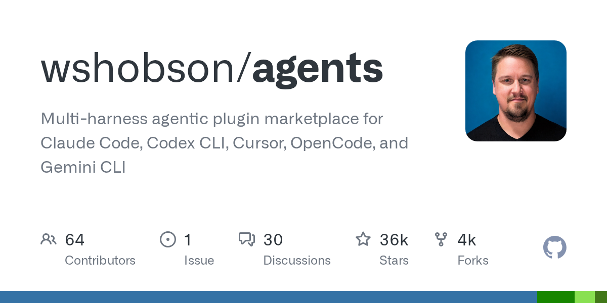
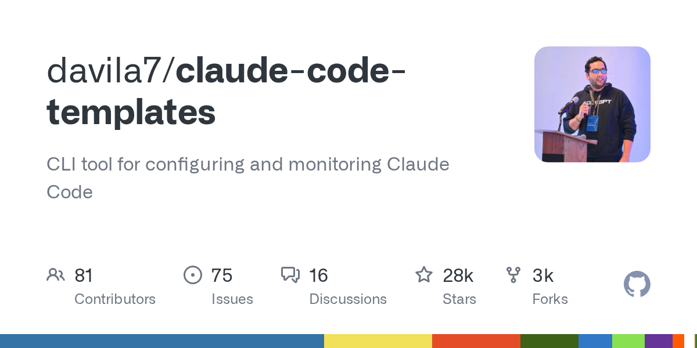
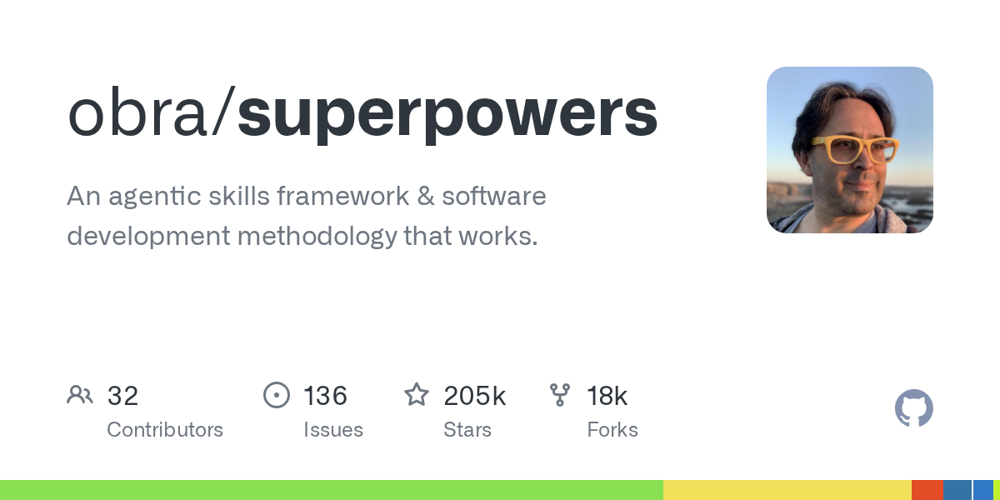
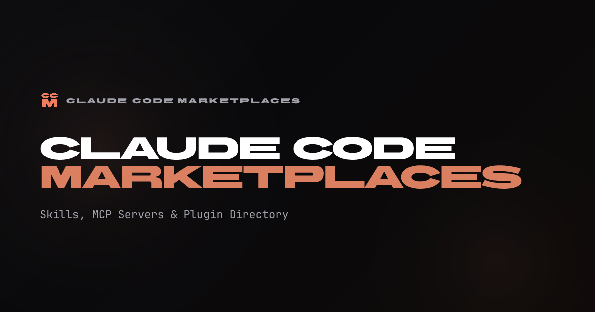

Plugins & the Marketplace
What plugins actually are, how the official + community marketplaces work, the few that earn their keep, and the trust footgun to flag in any 1–2 hour deep-dive.
for the talk
A Claude Code plugin is a packaging unit — a directory bundling any of skills, agents, slash commands, hooks, MCP servers, LSP servers — installed via /plugin from a marketplace (a marketplace.json catalog hosted on GitHub or anywhere reachable). The official Anthropic marketplace ships automatically (~101 plugins, 33 Anthropic + 68 partner as of May 2026)[20]; the community marketplace is one /plugin marketplace add away, with submissions gated by automated safety screening[7]. Spend ~25 min on anatomy and install flow, ~15 min on building, and ~15 min on the trust boundary — plugins execute arbitrary code with the user's privileges, and there is already a CVE history to point to[13].
Editor's pick · live-demo material
Anthropic's reference example. Installs cleanly, narrates well, and gives the audience an immediate "oh, that's all it is?" moment[2].
commit-commands
Three git slash commands — /commit, /commit-push-pr, /clean_gone — that stage, message, push, and prune in one pass. The whole plugin is a few hundred lines; perfect to cat on stage[2].
What's inside a plugin
Identified by .claude-plugin/plugin.json; component dirs go at the plugin root, NOT inside .claude-plugin/ — common landmine[3].
description Claude reads to decide when to use it[3].tail -F-style watchers that push notifications into the session[3].Plugins worth a slide
Don't recommend the whole shelf — pick the ones that earn their keep. Drawn from the official marketplace's dev workflows[2] and one of the few honest reviews[11].

The headline community pack — 80+ specialised sub-agents, each scoped to a single concern (security review, refactor, perf, etc.)[15].

Templating CLI for plugins, agents, and commands — useful as a survey of what people are actually building, not just downloading[16].

Among the most-installed third-party skill sets in the ecosystem — a curated grab-bag of SKILL.md files, agents, and slash commands[17].

Indexes 6,700+ skills, 2,500+ marketplaces, and 840+ MCP servers — the de-facto external catalog when /plugin isn't enough[14].
Partner integrations in the official marketplace
Worth name-dropping when you introduce the official tier. Anthropic-vetted, but still third-party code[6].
 aws-* family
aws-* familyThe three marketplace tiers
One schema, three trust contracts. The schema is published at schemastore.org/claude-code-marketplace.json[4].
claude-plugins-official
~101plugins33 Anthropic-built + 68 partner integrations, vetted at Anthropic's discretion — no public application process[20].
claude-plugins-community
opensubmissionAnyone can submit via claude.ai/settings/plugins/submit. Anthropic runs automated validation and safety screening; each entry pins to a commit SHA[7].
3rd-party / private
2,500+Any GitHub repo, git URL, HTTPS URL, or local path. No curation, no automated screening. Treat exactly like an npm install[14].
Install scopes
Maps cleanly to the standard Claude Code settings tiers. Pick the right one for the demo scenario[2].
extraKnownMarketplaces here so teammates get prompted to install on first folder-trust[2].